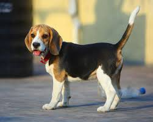
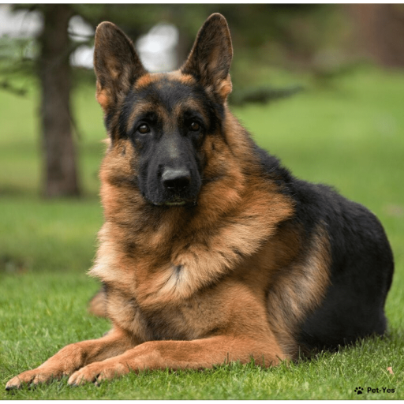
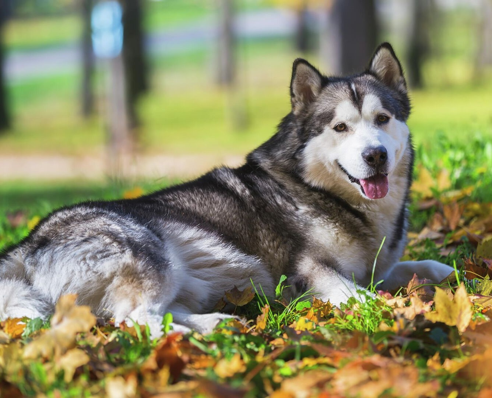
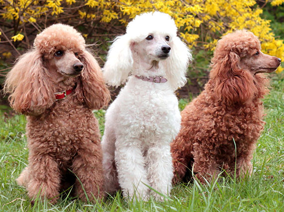

Рисунок 1: Бигль — порода гончих охотничьих собак, выведенная в Великобритании.

Рисунок 2: Немецкая овчарка — порода собак, изначально использовалась в качестве пастушьей и служебно-разыскной собаки.Рисунок 3: Французский бульдог – одна из самых популярных пород собак. Их предками были отважные бойцовые и травильные псы.

Рисунок 4: Аля́скинский маламу́т — порода ездовых собак аборигенного типа, предназначенная для работы в упряжке, одна из древнейших пород собак.

Рисунок 5: Пу́дель — порода собак. Изначально пудель являлся рабочей собакой, в частности использовался на охоте. Рисунок 6: Чихуа́хуа — собака-компаньон. Считается самой маленькой собакой в мире и носит имя мексиканского штата Чиуауа.